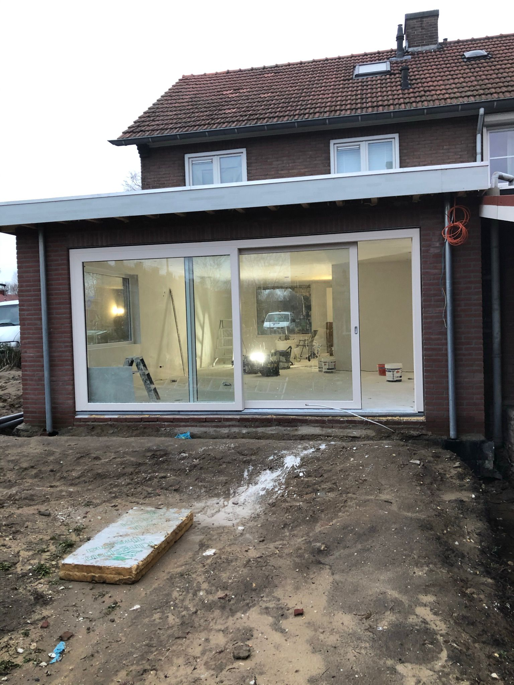

18 anos de experiencia, mentalidad holandesa y compromiso total con la calidad en la Costa Blanca.
18 years of experience, a Dutch mindset and total commitment to quality on the Costa Blanca.
18 Jahre Erfahrung, niederländische Mentalität und totales Engagement für Qualität an der Costa Blanca.
18 ans d'expérience, une mentalité hollandaise et un engagement total envers la qualité sur la Costa Blanca.
18 jaar ervaring, een Nederlandse werkmentaliteit en totale toewijding aan kwaliteit aan de Costa Blanca.

P. Passmann comenzó su carrera en los Países Bajos, donde durante 18 años construyó una sólida reputación en el sector de la construcción y la rehabilitación. La rigurosidad, la puntualidad y el respeto por el cliente son valores que forman parte del ADN de la empresa.
Al establecerse en la Costa Blanca, Passmann no solo trajo consigo esa experiencia, sino también una forma de trabajar diferente: la manera holandesa. Proyectos bien planificados, presupuestos transparentes, plazos cumplidos y materiales de primera calidad.
Hoy, Construcciones y Rehabilitaciones Passmann trabaja con propietarios de toda Europa que buscan un contratista de confianza en España: alguien que hable su idioma, entienda sus expectativas y entregue un resultado impecable.
P. Passmann began his career in the Netherlands, where over 18 years he built a solid reputation in construction and renovation. Rigour, punctuality and respect for the client are values he learned from day one — they are part of the company's DNA.
On settling on the Costa Blanca, Passmann brought not only that experience but also a different way of working: the Dutch way. Well-planned projects, transparent quotes, met deadlines and top-quality materials.
Today, Construcciones y Rehabilitaciones Passmann works with homeowners from all over Europe looking for a trusted contractor in Spain — someone who speaks their language, understands their expectations and delivers an impeccable result.
P. Passmann begann seine Karriere in den Niederlanden, wo er in 18 Jahren einen soliden Ruf im Bau- und Renovierungssektor aufbaute. Sorgfalt, Pünktlichkeit und Respekt gegenüber dem Kunden gehören zur DNA des Unternehmens.
Bei der Niederlassung an der Costa Blanca brachte Passmann nicht nur diese Erfahrung, sondern auch eine andere Arbeitsweise mit: die niederländische Art. Gut geplante Projekte, transparente Angebote, eingehaltene Fristen und hochwertige Materialien.
Heute arbeitet Passmann mit Hausbesitzern aus ganz Europa zusammen, die einen vertrauenswürdigen Auftragnehmer in Spanien suchen — jemanden, der ihre Sprache spricht und ein makelloses Ergebnis liefert.
P. Passmann a commencé sa carrière aux Pays-Bas, où il a bâti une solide réputation dans le secteur de la construction et de la rénovation en 18 ans. La rigueur, la ponctualité et le respect du client font partie de l'ADN de l'entreprise.
En s'installant sur la Costa Blanca, Passmann a apporté non seulement cette expérience, mais aussi une façon de travailler différente : la manière hollandaise. Projets bien planifiés, devis transparents, délais respectés et matériaux de première qualité.
Aujourd'hui, Passmann travaille avec des propriétaires de toute l'Europe à la recherche d'un entrepreneur de confiance en Espagne — quelqu'un qui parle leur langue et livre un résultat impeccable.
P. Passmann begon zijn carriere in Nederland, waar hij gedurende 18 jaar een solide reputatie opbouwde in de bouw- en renovatiesector. Nauwkeurigheid, stiptheid en respect voor de klant zitten in het DNA van het bedrijf.
Bij de vestiging aan de Costa Blanca nam Passmann niet alleen die ervaring mee, maar ook een andere manier van werken: de Nederlandse manier. Goed geplande projecten, transparante offertes, nagekomen deadlines en materialen van topkwaliteit.
Vandaag werkt Passmann samen met huiseigenaren uit heel Europa die op zoek zijn naar een betrouwbare aannemer in Spanje — iemand die hun taal spreekt en een onberispelijk resultaat levert.
Nuestros valores no son palabras en una pared — son la forma en que operamos cada día.
Our values are not words on a wall — they are the way we operate every single day.
Unsere Werte sind keine Worte an einer Wand — sie sind die Art, wie wir jeden Tag arbeiten.
Nos valeurs ne sont pas des mots sur un mur — c'est la façon dont nous opérons chaque jour.
Onze waarden zijn geen woorden op een muur — het is de manier waarop wij elke dag opereren.
Cada detalle importa. Medimos dos veces, ejecutamos una. Así garantizamos que el resultado final sea exactamente lo que se acordó.
Every detail matters. We measure twice, execute once. That is how we guarantee the final result is exactly what was agreed.
Jedes Detail zählt. Wir messen zweimal, führen einmal aus. So garantieren wir, dass das Endergebnis genau dem Vereinbarten entspricht.
Chaque détail compte. Nous mesurons deux fois, exécutons une fois. C'est ainsi que nous garantissons que le résultat final est exactement ce qui a été convenu.
Elk detail telt. Wij meten tweemaal, voeren eenmalig uit. Zo garanderen wij dat het eindresultaat precies is wat afgesproken werd.
Presupuestos detallados, sin sorpresas. Le informamos en cada fase sobre el progreso, los costes y los plazos.
Detailed quotes, no surprises. We keep you informed at every stage on progress, costs and timelines.
Detaillierte Angebote, keine Überraschungen. Wir informieren Sie in jeder Phase über Fortschritte, Kosten und Zeitpläne.
Des devis détaillés, sans surprises. Nous vous informons à chaque étape sur l'avancement, les coûts et les délais.
Gedetailleerde offertes, geen verrassingen. Wij informeren u in elke fase over voortgang, kosten en tijdlijnen.
Si algo no está bien, lo arreglamos. Sin excusas, sin coste adicional. La satisfacción del cliente es nuestro único estándar de éxito.
If something is not right, we fix it. No excuses, no extra cost. Client satisfaction is our only standard of success.
Wenn etwas nicht stimmt, beheben wir es. Keine Ausreden, keine Zusatzkosten. Die Kundenzufriedenheit ist unser einziger Erfolgsmaßstab.
Si quelque chose ne va pas, nous le réparons. Sans excuses, sans coût supplémentaire. La satisfaction du client est notre seul critère de succès.
Als iets niet goed is, herstellen wij het. Geen excuses, geen extra kosten. Klanttevredenheid is onze enige maatstaf voor succes.
Los plazos son compromisos, no estimaciones. Planificamos con rigor para cumplir lo prometido siempre.
Deadlines are commitments, not estimates. We plan rigorously to always deliver on our promises.
Fristen sind Verpflichtungen, keine Schätzungen. Wir planen sorgfältig, um unsere Versprechen immer einzuhalten.
Les délais sont des engagements, pas des estimations. Nous planifions rigoureusement pour toujours tenir nos promesses.
Deadlines zijn verplichtingen, geen schattingen. Wij plannen nauwkeurig om onze beloften altijd na te komen.
Atendemos en español, inglés, alemán, francés y neerlandés. Comunicación clara para clientes de toda Europa.
We serve in Spanish, English, German, French and Dutch. Clear communication for clients from all over Europe.
Wir bedienen auf Spanisch, Englisch, Deutsch, Französisch und Niederländisch. Klare Kommunikation für Kunden aus ganz Europa.
Nous servons en espagnol, anglais, allemand, français et néerlandais. Une communication claire pour les clients de toute l'Europe.
Wij bedienen in Spaans, Engels, Duits, Frans en Nederlands. Duidelijke communicatie voor klanten uit heel Europa.
Trabajamos cumpliendo estrictamente las normativas españolas obligatorias y los estándares de construcción holandeses.
We work in strict compliance with mandatory Spanish regulations and Dutch construction standards.
Wir arbeiten in strikter Einhaltung der obligatorischen spanischen Vorschriften und niederländischen Baustandards.
Nous travaillons en stricte conformité avec les réglementations espagnoles obligatoires et les normes de construction néerlandaises.
Wij werken in strikte naleving van de verplichte Spaanse regelgeving en de Nederlandse bouwstandaarden.
“Ser el contratista de referencia para propietarios europeos en la Costa Blanca: el que cumple lo que promete, trabaja con honestidad y entrega un resultado del que estar orgulloso.”
“To be the reference contractor for European homeowners on the Costa Blanca: the one that delivers on its promises, works with honesty and produces a result to be proud of.”
“Der bevorzugte Auftragnehmer für europäische Hausbesitzer an der Costa Blanca zu sein: derjenige, der seine Versprechen hält, ehrlich arbeitet und ein Ergebnis liefert, auf das man stolz sein kann.”
“Être l'entrepreneur de référence pour les propriétaires européens sur la Costa Blanca : celui qui tient ses promesses, travaille avec honnêteté et livre un résultat dont on peut être fier.”
“De referentie-aannemer zijn voor Europese huiseigenaren aan de Costa Blanca: degene die zijn beloften nakomt, eerlijk werkt en een resultaat levert waar je trots op kunt zijn.”
"Crecer siendo fieles a nuestros valores: sin comprometer la calidad, sin sacrificar la honestidad. Cada proyecto terminado es una referencia para el siguiente."
"To grow while staying true to our values: without compromising quality, without sacrificing honesty. Every completed project is a reference for the next."
"Zu wachsen und dabei unseren Werten treu zu bleiben: ohne Qualitätskompromisse, ohne Verzicht auf Ehrlichkeit. Jedes abgeschlossene Projekt ist eine Referenz für das nächste."
"Grandir en restant fidèles à nos valeurs : sans compromis sur la qualité, sans sacrifier l'honnêteté. Chaque projet terminé est une référence pour le suivant."
"Groeien terwijl wij trouw blijven aan onze waarden: zonder concessies aan kwaliteit, zonder eerlijkheid op te offeren. Elk afgerond project is een referentie voor het volgende."
Contáctenos para un presupuesto gratuito y sin compromiso.
Solicitar presupuestoKontaktieren Sie uns für ein kostenloses, unverbindliches Angebot.
Angebot anfordernContactez-nous pour un devis gratuit et sans engagement.
Demander un devisNeem contact op voor een gratis en vrijblijvende offerte.
Offerte aanvragen